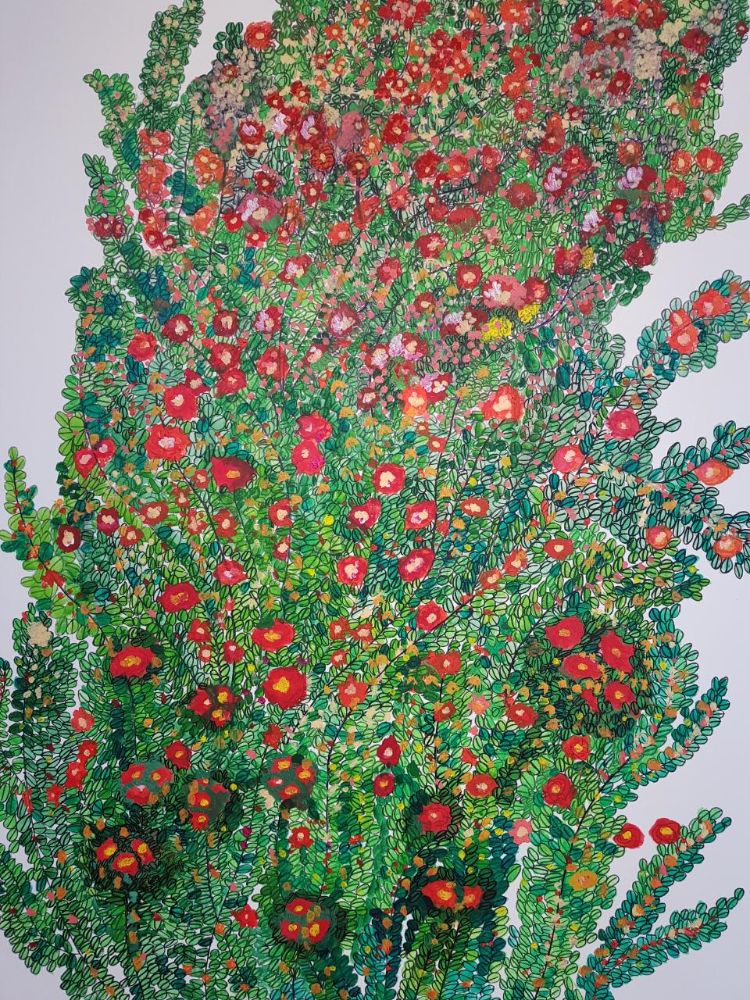
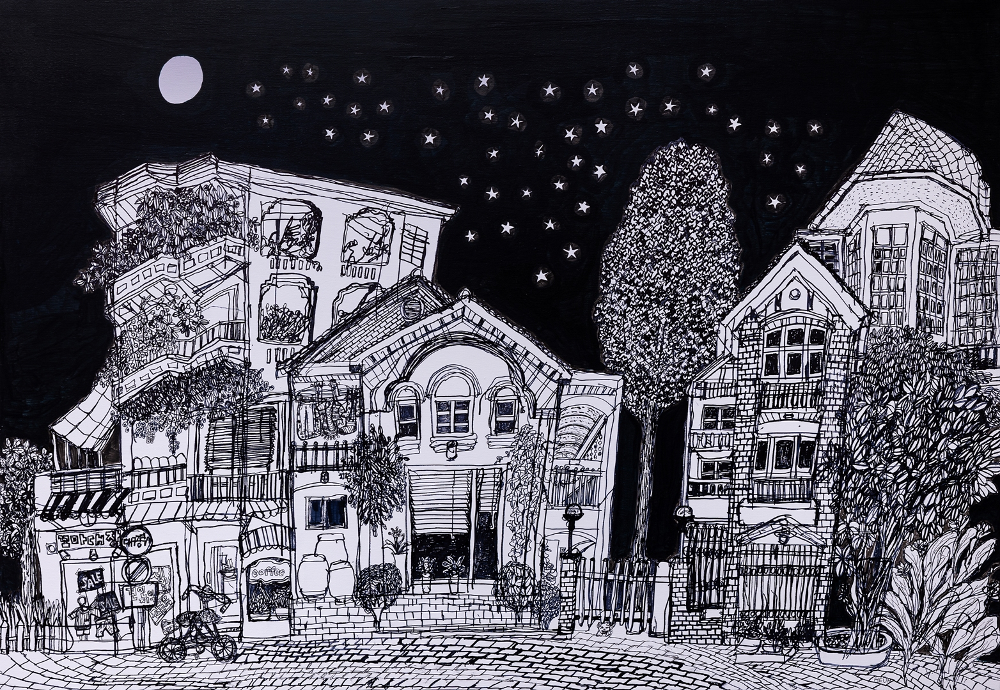
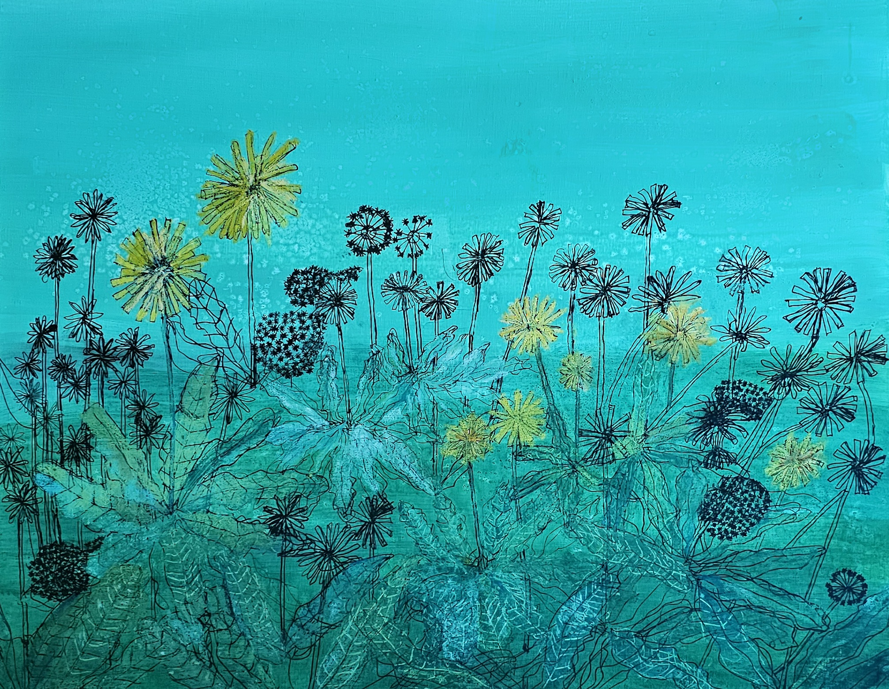
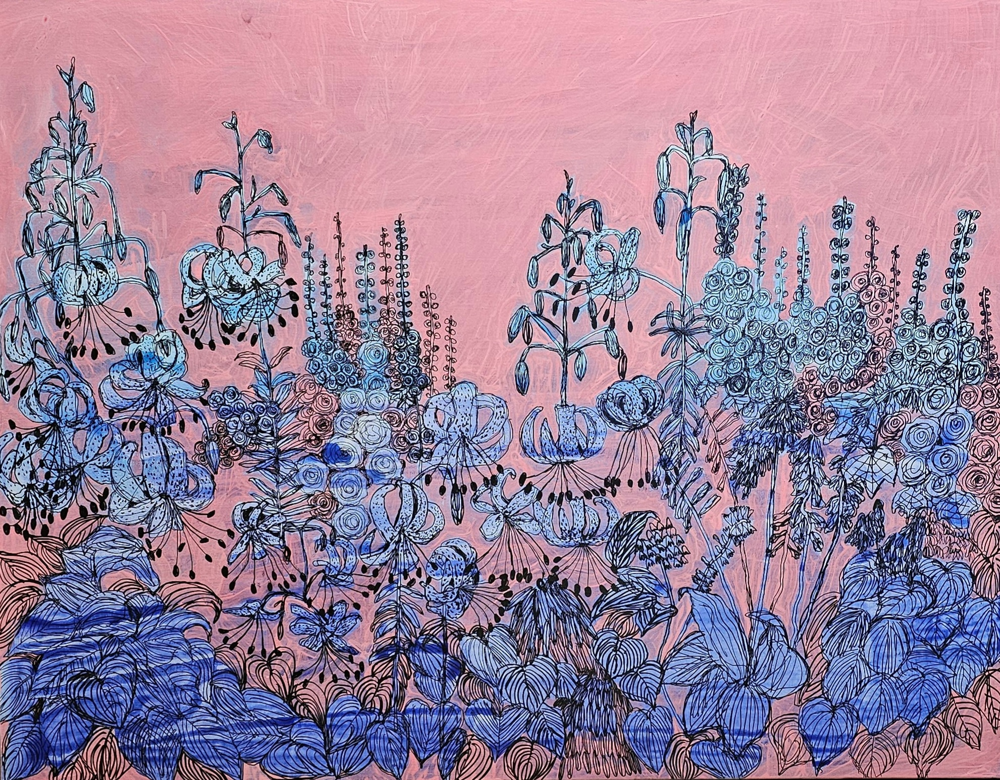
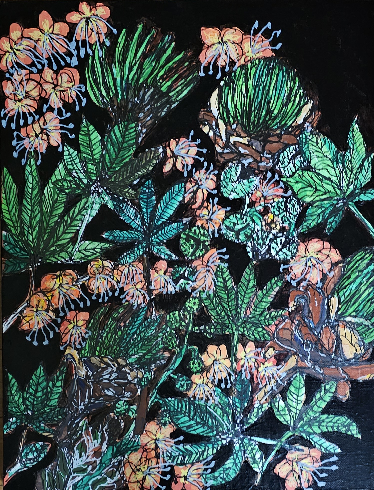
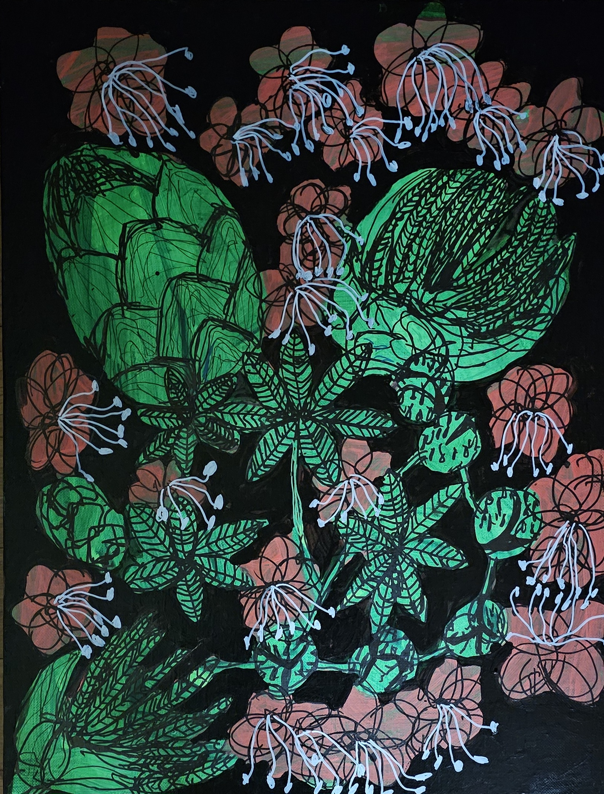

《시든 꽃에 물을 주듯》,
2019, acrylic on canvas, 162x112cm

《별고을》, 2022, acrylic on canvas, 80.3×116.7cm

《별빛이 키우는》, 2023,acrylic on canvas, 53.0x45.5cm

《나른한 바람》, 2024, mixed media on canvas, 90.9×72.7cm

《어머니 꽃》, 2024, acrylic on canvas, 80.3x116.7cm

《아름다운 밤1》, 2024, acrylic on canvas, 53x41cm

《아름다운 밤2》, 2024, acrylic on canvas, 53x41cm